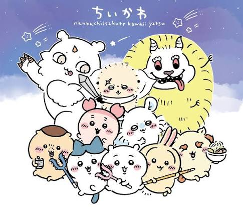
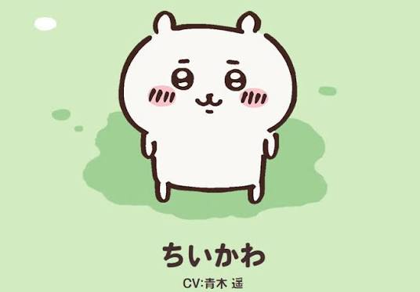
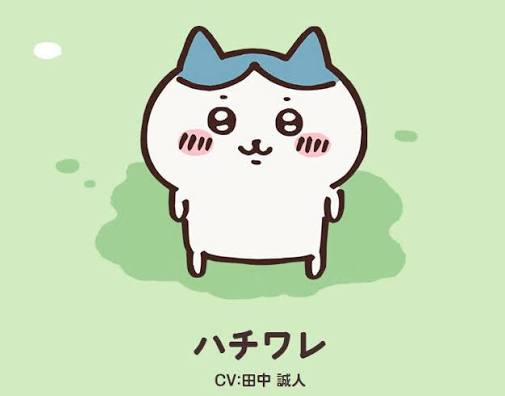
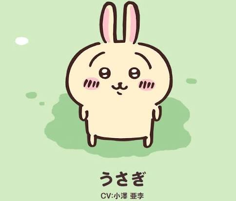

由日本插畫家 nagano 創作的現象級療癒漫畫。外表圓滾滾又可愛， 卻活在需要努力工作、考證照、討伐怪物才能生存的現實世界， 強烈的萌系反差讓它席捲全球社群。
「吉伊卡哇」意指「感覺又小又可愛的傢伙」。故事描述幾隻圓滾滾的小生物在 看似溫馨可愛的世界中，透過公會接取除草、討伐怪物等工作維生。 日常療癒之下藏著考取證照的現實壓力，以及世界中神秘「奇美拉」的暗黑暗喻， 反差魅力讓角色們深受喜愛。

愛哭又膽小，戰鬥力普通，但關鍵時刻總能爆發勇氣，運氣極佳。

頭頂八字紋的貓咪，樂觀開朗，是團隊的溝通橋樑與心靈支柱。

行動難以預測，卻持有三級除草證照，是全團最強的戰鬥力。